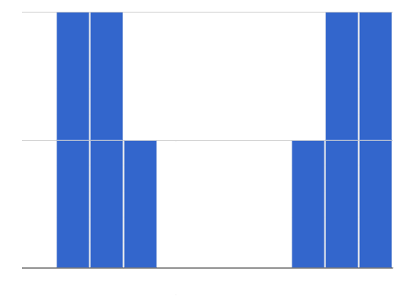

Students watched 5 videos, and rated them on a scale of 1 to 10. While the average score for every video is the same (5.5), the shapes of the ratings distributions were very different! Match the summary description (left) with the shape of the histogram of student ratings (right). For each histogram, the x-axis is the score, and the y-axis is the number of students who gave it that score. These axes are intentionally unlabeled - focusing on the shape is what matters here!
Most of the students were fine with the video, but a couple of them gave it an unusually low rating. |
1 (D) |
A |
||
Most of the students were okay with the video, but a couple students gave it an unusually high rating. |
2 (C) |
B |
||
Students tended to give the video an average rating, and they weren’t likely to stray far from the average. |
3 (A) |
C |
||
Students either really liked or really disliked the video. |
4 (E) |
D |
||
Reactions to the video were all over the place: high ratings and low ratings and inbetween ratings were all equally likely. |
5 (B) |
E |
 |


{kind=link}
These materials were developed partly through support of the National Science Foundation,
(awards 1042210, 1535276, 1648684, and 1738598).  Bootstrap by the Bootstrap Community is licensed under a Creative Commons 4.0 Unported License. This license does not grant permission to run training or professional development. Offering training or professional development with materials substantially derived from Bootstrap must be approved in writing by a Bootstrap Director. Permissions beyond the scope of this license, such as to run training, may be available by contacting contact@BootstrapWorld.org.
Bootstrap by the Bootstrap Community is licensed under a Creative Commons 4.0 Unported License. This license does not grant permission to run training or professional development. Offering training or professional development with materials substantially derived from Bootstrap must be approved in writing by a Bootstrap Director. Permissions beyond the scope of this license, such as to run training, may be available by contacting contact@BootstrapWorld.org.